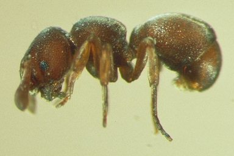
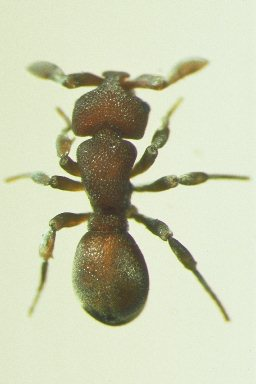
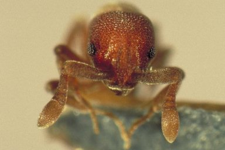

Discothyrea kamiteta
Discothyrea kamiteta est une petite fourmi prédatrice de la sous-famille Proceratiinae, spécialisée dans la prédation d'œufs d'araignées. Endémique du Japon, cette espèce possède des yeux réduits et un corps compact adapté à la vie souterraine. Ses mandibules sont spécialement conçues pour percer les cocons d'œufs d'araignées. Décrite par Katayama (2013), son comportement prédateur unique en fait un sujet d'étude fascinant." : "Discothyrea kamiteta is a small predatory ant of the subfamily Proceratiinae, specialized in preying on spider eggs. Endemic to Japan, this species has reduced eyes and a compact body adapted to subterranean life. Its mandibles are specially designed to pierce spider egg sacs. Described by Katayama (2013), its unique predatory behavior makes it a fascinating study subject." ?>


